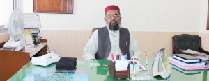
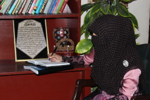
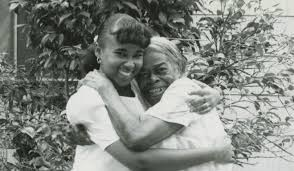
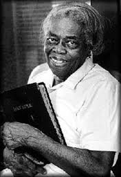
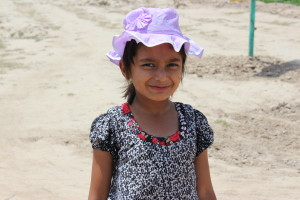
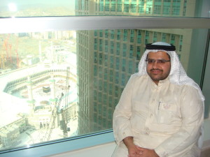

Waqt Karta Hay Parwarish Barsun Haadsa Aik Dam Nahi Hota…!!!
(None of the events occur at once rather long time is responsible for events to arise)
Now I, Syed Shaukat Hussain Bukhari am going to share how the thought went through different phases until it stimulated me to take this great decision of “AGM”, and dedicate the rest of my life for it.

{kind=link}
It was about 1978 when I was a youngster and I used to go for hunting. Once on my hunting trip, I shot a bird, it got injured but before I could grab, it flew away. On my way back home, a drop of blood dripped on my feet. I looked up and was astonished. It was the same bird I shot, but was injured sitting on a bunch of tree near its nest. In the nest its babies were crying for food while the injured mother was fighting with death. After a while it fell down near my feet and was no more alive. At that moment I lost my heartbeat because the baby birds were all alone and I was the one who snatched their mother. They were screaming and nobody was there to feed them making me feel that I am the one who made them orphans. It was for the first time in my youth when I warmly realized the meaning of being an orphan.
It was 1998, when for the second time I strongly felt for orphans. On crossing a market, I stopped my car near a fruit seller and asked for some kg of guavas and apples. Meanwhile I saw two poor baby girls nearby, fighting for the rotten fruits thrown away by the fruit seller. A heart touching scene it was. I lost my heart beat again, I tried to peek into my heart and heard a whisper “Mr. Bukhari, are you watching the face of the world around you?” At the very moment, I turned my car back and stopped near those baby girls. I called them; they seemed scared of me. When I saw fear in those innocent eyes, I called them with more affection. They slowly came forward with slight scare still prevalent in their innocent eyes. I took out the fruits I had just bought from my car. I divided guavas and apples into two and asked them to take these fresh fruits and leave the nasty ones. The baby girls started staring as if I were making a fool of them or having such healthy fruits to eat was a surprise too big for them. I came to know from the seller that those little dolls were orphans and worked in a neighboring house. I looked at the baby girls again. I was really feeling peace in my heart seeing the baby girls so happy and running to their home with surprised eyes. I had never felt such harmony and spiritual peace elsewhere that I felt after that incident. A painful thought that stuck to my mind, straining me a lot was, that day I was there for those baby orphans to replace fresh and healthy fruits with nasty ones but what about the next day? What about their other basic needs? What about thousands of other poor orphans? It was the time that revolutionized my mind and I decided from the core of my heart that when I would be financially stable to some extent, I would build a gigantic welfare center for poor orphans so that this depressed and deprived class of our society might not start their lives by cleaning the houses of others or by collecting the garbage on the roads and eat dirty meals, rather they must be respectable people of their culture to represent the deserving rights of orphans in front of the world.
Shikwa nahi mujh ko k hun mehroom’e tamana
Gham hay to faqat itna kay tu daikh raha hay
(I don’t complain of the wishes unfulfilled, but a gloomy fact is that you are aware of what I am going through)
Time passed on and then came the worst year of my entire life, 2005, the year I lost my wife. I used to see my kids weeping at mid nights. I found them feel miserable when they could not share with me that they used to share with their mother. I tried my level best to fill their mother’s space but all in vain because despite of all his love and affection, a father can’t be a mother ever. I did everything to be their friend but failed to give them the lap of a mother. My youngest son of 2.5 years crying for his mother used to make me pathetic. But again this mishap strengthened my previously prevailing feelings that I was alive for my kids to care for them and to fulfill their needs in a sound manner as I was in officer category. But what about those poor orphans who were not having their basic needs fulfilled and are unable to secure a respectable place in the society and thus, are compelled to be beggars or servants in the houses of the rich so that they can have some pennies to buy them something to eat.
It was in 2011, when my dear daughter Syeda Rabia Batool was doing her BS-Chemistry in Bahauddin Zakariya University Multan. Once for a departmental funfair function in her campus, it was announced for students to give 250 rupees per head for the function. My daughter refused to give collection as she was leader of her group.

{kind=link}
She was called in director’s office to justify her refusal. She answered “Sir is this function more important than the education of the students, who because of their self respect can’t ask to any one for their dues and get terminated for not paying the semester fee? Isn’t it possible to spend this collection to pay the dues of those needy students”? She continued by saying; Sir since my childhood, daily on my way to school, when I used to see poor children working on construction sites or removing garbage from the roads, I wished I could take these innocent children in my bus and give them my bag to study as I was studying. It was the time when I decided to do something for those poor children so that these brilliant brains can also contribute to the betterment of our motherland, Pakistan. Sir, 250 rupees are nothing if they are only 250 and can’t do any valuable help to someone but many 250’s if combined together make a substantial amount that can surely be enough to meet the educational expense of many needy students. Allah Almighty has blessed us with all body parts perfectly working and our parents with better financial status so that they could let us have best education, food and health. What I think is that all these blessings demand from us that we must thank Allah Almighty and to serve humanity is the best way to pay gratitude to Him. Therefore please allow me to materialize my dream. I have a firm belief that the only thing lacking is an initiative, the first drop of rain. Then surely it will rain and many people will join in”.
The director was stunned to silence at this unexpected answer. He allowed her to share her ideas with her fellows. Initially she got a desperate response as it is always difficult to convince people for some noble cause. After a long period of rejections and criticism she was successful to have some compassionate fellows who were ready to stand with her for this cause and a welfare foundation came into being with the name of “Ist Rain Drop” (IRD) under the presidency of my daughter Syeda Rabia Batool to help those who cannot pay their dues. Now Alhamdulilah my daughter is supervising a staff of more than 60 members in different departments of her university and up till now, IRD has spent many lacs by taking a contribution of only 100 rupees per month from every contributor. When I came to know that my daughter has brought a revolutionary change in the history of her university for the deprived class of society, I thought; Yes! My children have the ability to look after and manage the orphan care center (AGM), that I was dreaming alone, after me.
When I finally decided to make an orphan care center under the name of AGHOSHE-E-GULZAR-E-MADINA (AGM) I was very much expectant of my blood relations. I thought my brothers will hearten me and will emotionally hold me up for this sacred cause and will stand by me through their co-operation, but Alas! In response, one of my brothers asked me to first think about the reconstruction of the falling wall of my inherited house in the hometown. I was surprised at his unexpected answer. I replied that the value of a sacrifice becomes priceless if one builds a shelter for the poor while the wall of his own house is tumbling. He further suggested me that there is no need to realize my dream as there are great many orphan care centers in the world and better is to do the same for my own kids instead of others’. My blood relations whom I trusted the most to be with me in my mission left me alone. Their response really hurt me and shattered my ambitions and aims.
These happenings made me think that how can I take this mission to its destination on my own as I wasn’t having enough finance, support and time to take this huge step alone. But the destiny was planning not to let me depart of this pious track. There came a U-turn when I was selected by my seniors to attend the safety leadership training under USAID POWER DITRIBUTION PROGRAM and Leadership Safety Award Ceremony held in Islamabad on 17/03/2014. The Lecturer of the day Mr. Tufail Ahmad Sheikh during his address showed a documentary of a black woman named Oseola McCarty who was born and grown up in poverty in Mississippi. She worked for almost 80 years as a washerwoman and used to deposit her money in a bank. During her last days in severe illness, the management of the bank (where her money was deposited) came to her. The management asked Ms. McCarty what to do with her deposited money. For ease, they asked her if she had 100 dollar, how would she like to spend them. She replied that I would like to donate 10 percent of it to the kids of my poor blood relatives for their better education and 10 percent to their neighbors so that they may not feel an inferiority complex due to improved financial condition of my relatives. When the bank management asked her what to do with the rest of her deposited money, surprisingly, she replied with tears in her eyes that whether it is possible to hire a hall or a classroom in the University of Southern Mississippi for poor blackish orphans so that they might be able to achieve higher possible education and might not start their carrier as a washerwoman/man like her. After a discussion with the chancellor of the university, bank management pleased Ms. McCarty by giving her the good news that her money was more than enough ($280, 000) to build a department rather than hiring a single classroom. She another wish but I am sure I won’t be alive to see the realization of my wish as I am on death bed. When she was asked to expressed, she stated that I want to see a poor blackish girl taking the degree of doctorate from this department. God might have loved her affection and dedication for humanity therefore she remained alive for about next 16 years. In August 1995, 18-year old Stephanie Bullock received the first Oseola McCarty Scholarship (after the name of Ms. McCarty). Ms. McCarty had to leave school at the age of eight. But her sacrifice is invaluable and her concern for humanity is commendable. She tried to ensure that people around her would have access to education which she was deprived of. In reward of her dedication and selfless efforts for mankind she was awarded with the degree of doctorate in honor.

{kind=link}
She said “I am proud that I worked hard and that my money will help young people who worked hard to deserve it. I’m proud that I am leaving something positive in this world. My only regret is that I didn’t have more to give.” She cast her buckets down and fixed what was at hand. She said “I can’t do everything. But I can do something to help somebody. And what I can do I will do.”
This story of this washer woman and her motivational words brought me back to stand up again for the realization of my mission. I thought if a dishwasher woman can serve humanity in such a memorable way then why can’t I play the same role?

{kind=link}
Thus there were great many problems that I faced but by the grace of Allah Almighty, my passion and dedication strengthened my willpower. My spiritual masters remained with me in my imaginations, soul and at every step of my struggle. Innocent eyes of those little baby girls, blood of the dying mother bird, spirit of Oseola MacCarty and courage of my daughter didn’t let me down anywhere in this journey. Each and every second that I spent, I felt as if were lying on a bed of thorns and was sleepless for many nights. Every night I used to see “Aghosh-e-Gulzar-e-Madina” to be fully accomplished and orphan children studying and playing there in healthy and good environments just like their own house instead of wandering for few pennies to eat something.
After the final decision of taking first step for this mission, I went to search for the location with my peon Mohammad Rafi along with an innocent baby girl named “Bakhtawar” who was with him. After exploring all possible locations of that area, on my way back home I asked my driver about that little innocent girl? He said; “Sir she is an orphan and I have adopted her.” It was really a very surprising co-incidence that an orphan baby girl was with me the whole day during my first journey of this mission. It was undoubtedly a great blessing and an omen of involvement of the grace of Allah Almighty.

{kind=link}
The story of an Angel
I decided to take a massive step that was undoubtedly beyond my financial capacity. But according to my remaining approximate life that I wish, must not exceed the age of Shah-E-Do Alam, Imam-ul-Ambia, Habib-e-Khuda Hazrat Muhammad Mustafa (S.A.W.W) that was 63 years, I didn’t have enough time to wait further. My heart, brain and nervous system remained in continual strains and my heart beat went out of control like a fish outside water. The height of my wishes was wholly reliant on extremely sensitive situations hoping for the realization of my holly mission Agosh-e-Gulzar-e-Madina as early as possible. But a desperate fact was that I was standing all unaccompanied at the initial stages of this long-term mission.
Unfortunately to manage with my sentiments towards the incredible step of construction of Agosh-e-Gulzar-e-Madina, I misjudged my dear ones and overvalued my assets which were to be offered for sale to start this holy mission. To manage the huge capital cost of land for Agosh-e--Gulzar-e-Madina within two months only is a painful and unexplainable story indeed….!!!
I am going to unveil an important episode with some confines in it.My mission of Agosh-e-Gulzar-e-Madina was about to drown at one stage. Apart from very few characters who played their level best role, a man alike angel stepped forward from Madina & adopted the mission of Agosh-e-Gulazar-e-Madina as his own project. That man through his loyal spirit & realistic emotions from the entire core of his heart virtually elevated my courage from earth to sky and gave a real life to this great holy mission Agosh-e-Gulzar-e- Madina.

{kind=link}
Words are unable to express my gratitude to this saint. I, Syed Shaukat Hussain Bukhari feel honored to admit that my dream was losing its track just like a candle flickering in severe breezes. But I am still alive with my aim and most importantly this holy mission is also flowering solely due to the blessings of Allah Almighty and the supreme role played by Mr. Muhammad Siddique AlMadni AlBaloshi. His few words even after dedicating himself to Agosh-e-Gulazar-e-Madina that have penetrated deep into my soul, always reminding me of his uttermost greatness are: “Sorry to disturb and bother you again and again. Actually I am worried for this sacred mission. Please let me know if you need anything more because everything is for you and the mission Agosh-e-Gulazar-e-Madina.” No power in this world can reward him for this modesty and dedication but he will surely be rewarded from the court of Allah Almighty and Bargah-e-Risalat(S.A.W.W). I dedicate all my prayers to the inspiring personality of Mr. Muhammad Siddique AlMadni AlBaloshi and his whole family forever.
“Khuda Karay esi hastiyian is pakeeza mission Agosh-e-Gulzar-e-Madina main is faqeer kay saath Rahen Takey ye Mission jald az jald paya’e takmeel ko pohnchey (Amin).”
(May such people be with me during this holy mission Agosh-e-Gulzar-e-Madina so that this mission may complete as soon as possible. Amin)